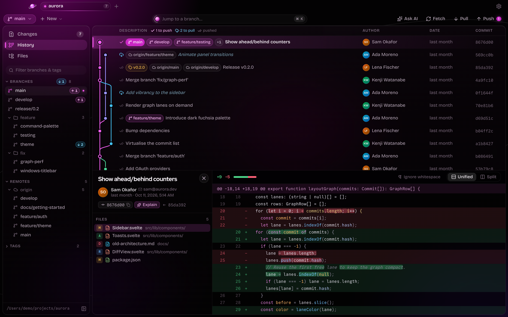
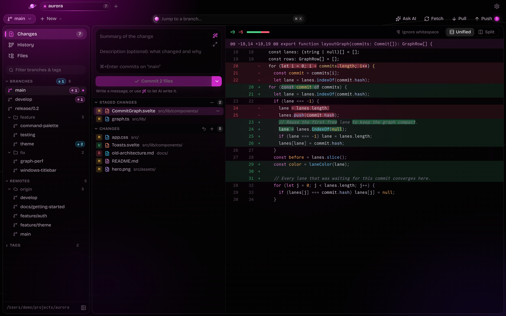

A fast desktop Git client with a colourful commit graph, built-in conflict resolution and an AI assistant that knows your repository.

The desktop Git client with a commit graph you can read, merge conflicts you can actually fix, and AI that knows your repo.
A fast, good-looking desktop Git client for people who'd rather ship than fight their tools.

A colour-coded commit graph, branches, tags and stashes, with what's waiting to be pushed or pulled marked on every row.
Accept current, incoming or both, edit by hand, or let AI resolve the whole merge with a one-line reason for every decision.
Company SSO, expired sign-ins, protected branches: Orbe tells you what happened in plain words, lets you sign in right there and retries for you.
Bring your own AI: Claude, ChatGPT or a local model.